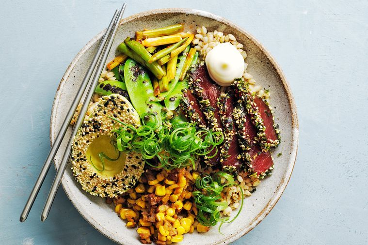

Green and gold rice bowls

INGREDIENTS:
- - 2 cups (400g) pearl barley
- - 2 tbs sushi seasoning liquid (from supermarkets)
- - 3 tsp sesame oil
- - 40g unsalted butter
- - 1 tbs white (shiro) miso paste
- - 1 1/2 cups (240g) fresh or thawed frozen corn kernels
- - 4 cup (40g) almonds, chopped
- - 2 tsp brown sugar
- - 6 spring onions, white part cut into 4cm-thick slices, green part shredded
- - 200g snowpeas
- - 3 tsp gochujang (Korean fermented chilli paste)
- - 300g sashimi-grade tuna, cut into 5mm-thick slices
- - 2 tbs each tamari and furikake (from Asian food shops)
- - 2 avocadoes, halved
- - Kewpie mayonnaise, to serve
- Boil barley in a saucepan of boiling water for 30 minutes or until tender. Drain, transfer to a bowl and stir through sushi seasoning and 1 tsp sesame oil. Set aside.
- Meanwhile, melt butter and miso in a frypan over high heat, stirring until well combined. Add corn, almonds, sugar and 1/3 cup (80ml) water, and cook, stirring occasionally, for 5 minutes or until reduced slightly. Remove from heat and cover to keep warm.
- Place green part of spring onions in a bowl of iced water and stand for 10 minutes to curl. Drain and set aside.
- Heat a frypan over high heat until very hot, then add snowpeas and cook on one side for 2 minutes or until blackened. Transfer to a plate and season. Return pan to high heat, add white part of spring onions, gochujang and remaining 2 tsp sesame oil, and cook, stirring regularly, for 90 seconds or until softened slightly.
- Toss tuna in tamari and dip tuna edges into furikake. Dip cut side of avocadoes in sesame seeds. Divide ingredients among serving bowls and serve with mayonnaise.